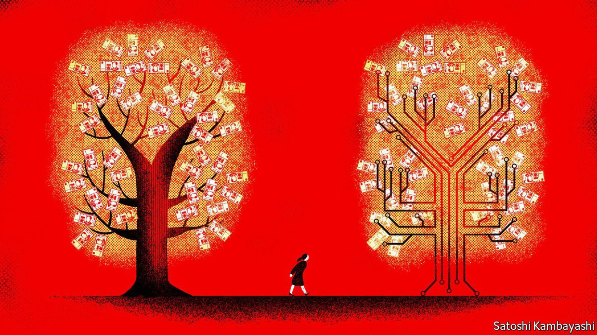
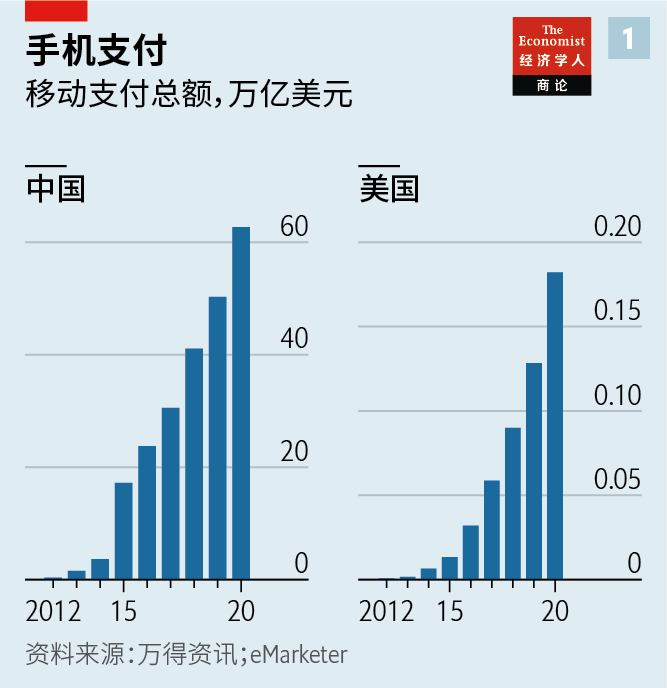
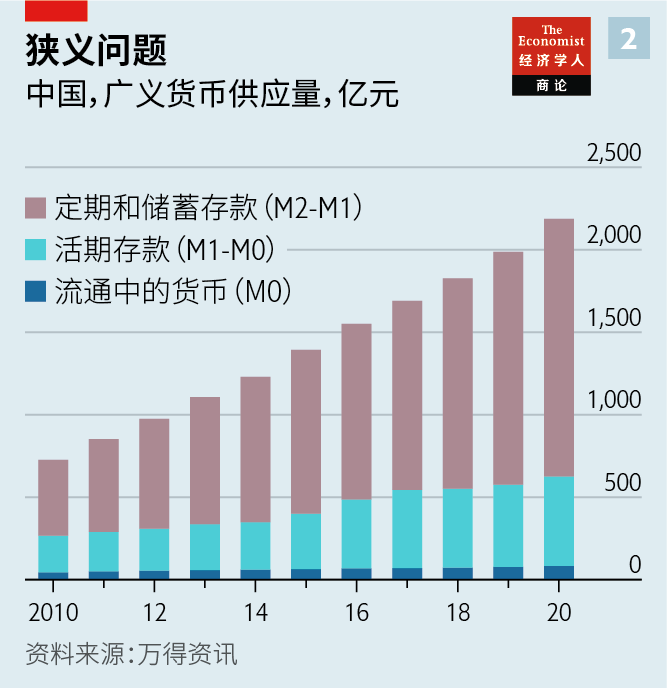
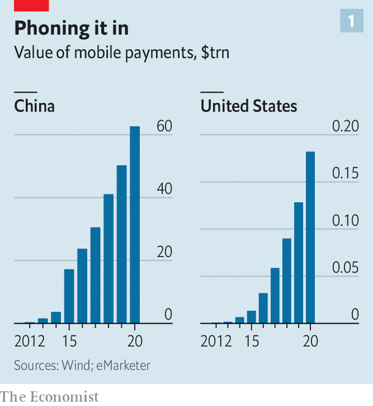
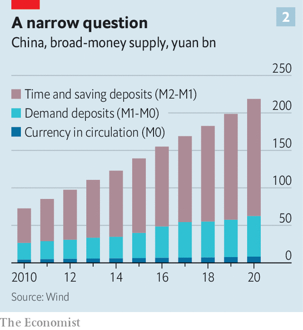

2021-05-20T15:27:18+00:00
换掉纸币
数字化会改变人民币在国内外的地位吗？
别抱太大期望：数字人民币会和传统人民币很类似
点几下手机， 24岁的上班族陆青青（音译）便迈入了未来货币时代。去年年底，中国的数字货币也就是数字人民币在深圳试点，陆女士是五万名入选的参与者之一。她下载了一个应用，收到了政府发的200元钱，然后去买书。显示在这款应用上的是一张传统的钞票。“感觉就像真钱一样。”她说。
从法律上说，它和纸钞一样真实。在由六家商业银行的任一提供的数字人民币应用中，所有资金都由它们在中国人民银行的等值存款作为担保。正如人行为所有纸质人民币提供支持一样，它也为数字人民币提供担保。比如，如果创建了陆女士的数字钱包的商业银行破产了，与她的身份证号码相关联的数字货币就会被转移到新的钱包中。
世界各国的央行都在考虑发行数字版的纸币和硬币。虽然中国不会是第一个发行数字货币的国家（这份荣耀归于巴哈马），但它却是最重要的发行地。它是全球移动支付的领头羊（见图表1）。自去年以来已有超过50万人试用了数字人民币。人行正在研究如何将它推广到海外。历史学家尼尔·弗格森（Niall Ferguson）已呼吁美国认识到让中国“铸造未来货币”的危险。
中国发行数字货币的初衷是为了遏制大型移动支付供应商。现在，关于这种货币有了三个大胆的说法：它将极大提高中国的监控能力；它能让政府大大增强对货币的控制权；它还将挑战美元的显赫地位。
然而，中国国内的许多经济学家远没有那么乐观。数字人民币的设计以及中国经济体制的性质意味着这三种说法都不太可能很快成为现实。“数字人民币不是魔法，所以我们不指望它有什么奇效。”上海国是金融改革研究院的刘胜军表示。
先来看第一个说法——数字货币提供了无与伦比的监控能力，让政府可以追踪每一笔开支。这种说法也不全错。但相比政府原本已有的监控能力，数字货币带来的提升有限。
如今，大部分移动支付都要用到与用户的支付宝或微信账号绑定的银行卡。这些支付必须通过网联清算这个中央清算平台。同样，外汇交易也要通过中国外汇交易系统。在这两种情况下，监管机构都可以实时监测人们的开支情况。对于不涉及银行的移动支付，官员们可以要求它们提供记录，而且据一位业内人士说，可能很快也会要求提供实时报告。
结果就是，即使没有数字人民币，除了传统的现金外，监管机构也没有真正的盲点了。而只要还有大批老年人不太喜欢用智能手机付款，政府就不会废除现金。
第二个关于数字人民币的大胆说法是它将重塑中国的货币政策。按照这种看法，人行将能够控制资金的使用，让它在指定时间用于指定用途。然而，这既低估了人行既有的能力，也高估了数字人民币将赋予该行的能力。
中国在管理货币供应和利率时已经考虑到了不同部门。例如，自2015年以来，中国为经济适用房建设提供了数千亿元的资金。最近，它向各银行下达了为小企业降息的指示。
有人可能认为数字人民币能更精准地定位。但它的设计会限制它的作用。人行只会用数字人民币替代一小部分基础货币也就是M0（流通中现金），其余的货币供应不受影响（见图表2）。它将通过商业银行分发数字人民币，从而让公众用上数字人民币。它不会为数字人民币支付利息。而且它规定的持有上限可能会比较低。
诚然，人行在日后可能会扩大数字人民币的角色。但目前设置这些限制是有原因的。政府很小心地不要破坏金融体系。它不希望储户全部弃用银行存款而转向数字人民币，这会增加银行的融资难度。此外，政府中鲜有严肃的经济学家赞同百分之百供应数字人民币的想法，即使这样政府就可以直接控制银行的放贷。“我们不想回到中央计划。那会是个错误。”前央行顾问余永定表示。
最后一个大胆的说法是数字人民币将让人民币一跃成为全球货币。但这误解了为什么如今人民币只占国际支付总额的2%，与加元差不多。公司和投资者在决定使用哪种货币时，会考虑货币兑换的难易程度、投资该货币的自由度，以及他们对发行国的法律体系的信任度。中国坚持维持比其他主要经济体都严格得多的资本管制，加上人们对其政治体制根深蒂固的怀疑，都削弱了人民币的吸引力。制约人民币的因素是政策和政治，而不是技术。
就算是数字人民币的技术优势也远未明确。当公司把资金转入或转出中国时，它们已经在使用数字形式的货币了：银行根据SWIFT支付网络上的电子信息，在一个国家记入贷方账户，同时在另一个国家记入借方账户。转账流程慢是因为要遵守中国的资本管制以及防洗钱之类的国际法则。
数字人民币不会省掉这类核查，而且总部位于比利时的SWIFT系统连接了超过1.1万家金融机构，可能仍然是最高效的跨境支付信息共享的渠道。“即使从长期看，SWIFT仍将不可或缺。”中国社会科学院的刘东民表示。
关于数字人民币的这三个较为激进的说法可能不会变成现实，但数字人民币能否实现它最初的目标，让人行在数字支付领域占得一席之地？很可能，但占比不会太大。深圳数字人民币的试点结束后，陆女士说她会用数字人民币支付一些费用，但使用支付宝和微信要方便得多，因为它们与商业和社交通讯网络紧密相连。国是金融改革研究院的刘胜军认为其他人也是这样想的。他预计，三年内数字人民币占移动支付的比例将低于5%。
正在酝酿自己的数字货币的西方政府和央行官员可能会想知道，数字人民币试点的结果是否有任何可借鉴之处。但中国在太多方面都与众不同——从它受保护的金融体系、错综复杂的资本管制，到它移动支付的规模——所以它的经验很可能也是独一无二的。其他国家肯定会为自己设计不同的数字货币。不过，中国对数字人民币的谨慎做法至少暗示了，如果不受限制，这项技术的颠覆力可能会非常之大。
2021-05-20T15:27:18+00:00
Swapping notes
Will going digital transform the yuan’s status at home and abroad?
Don’t count on it: the new yuan will be a lot like the old yuan
WITH A FEW taps on her phone, Lu Qingqing, a 24-year-old office worker, leapt into the monetary future. She was one of 50,000 people in Shenzhen selected late last year for a trial of China’s digital currency, called eCNY. She downloaded an app, received 200 yuan ($30) from the government and went shopping for books. The app’s display showed a traditional banknote. “It felt like real money,” she says.
Legally, it is as real as hard cash. All the money in an eCNY app, offered by one of six commercial banks, is backed by an equivalent deposit at the People’s Bank of China. Just as the central bank stands behind any paper yuan, so does it guarantee eCNY. If, say, the commercial bank that made Ms Lu’s digital wallet went bust, her eCNY—linked to her personal-identity number—would be transferred to a new wallet.
Central banks worldwide are considering issuing digital versions of notes and coins. Although China will not be the first (that honour goes to the Bahamas), it is the most important launching ground. It is the world’s leader in mobile payments (see chart 1). More than half a million people have already received eCNY in trials since last year. China’s central bank is studying how to spread it abroad. Niall Ferguson, a historian, has called on America to wake up to the peril of letting China “mint the money of the future”.
China’s digital currency was first conceived as a way to curb the big mobile-money providers. Now three bold claims are being made about it: that it will dramatically enhance China’s surveillance capabilities; that it will allow the state to wield far more control over money; and that it will challenge the dollar for prominence.
Within China, however, many economists are far less bullish. The design of the eCNY, and the nature of China’s economic system, mean that each of these claims is unlikely to be realised soon. “The digital yuan is not magic, so we don’t expect magic from it,” says Gary Liu of the China Financial Reform Institute in Shanghai.
Start with the first claim, that digitisation offers unmatched surveillance abilities, letting the state track all spending. It is not entirely wrong. But it is a limited gain compared with its existing powers.
Most mobile payments today involve a bank card, tethered to users’ accounts on Alipay or WeChat. These must pass through NetsUnion, a central clearing platform. Similarly, foreign-exchange transactions take place on the China Foreign Exchange Trade System. In both cases regulators can see how people spend in real time. For mobile payments that do not touch banks, officials can demand a record and, says an industry insider, may soon require real-time reporting, too.
The upshot is that, even without eCNY, regulators have no real blind spots left, apart from old-fashioned cash. And so long as millions of older citizens do not much like paying for things with smartphones, the government will not phase out cash.
The second bold claim about eCNY is that it will reshape monetary policy in China. According to this view, the central bank will be able to program money to be used for specific purposes and at predefined times. This, however, both understates what the central bank can already do and overstates what the eCNY will let it do.
China already manages both the money supply and interest rates with different sectors in mind. Since 2015, for instance, it has created hundreds of billions of yuan for the construction of affordable housing. More recently it has instructed banks to lower interest rates for small firms.
The eCNY, one might assume, will make targeting more precise. But its design will circumscribe its role. The central bank will replace only a small portion of base money, known as M0, with eCNY, leaving the rest of the money supply undisturbed (see chart 2). It will distribute eCNY through commercial banks, which in turn will make it available to the public. It will not pay interest on eCNY. And it will probably place low ceilings on how much people can hold.
Granted, the central bank may in time expand the eCNY’s role. But the limitations exist for a reason. The government is wary of undermining the financial system. It does not want savers to switch out of bank deposits en masse into eCNY, which would make it harder for banks to fund themselves. Moreover, few serious economists in Beijing like the idea of a 100% eCNY money supply, in which the government could directly control how banks lend. “We don’t want to go back to central planning. That would be a mistake,” says Yu Yongding, a former adviser to the central bank.
The final bold claim is that eCNY will catapult the yuan to global status. But that misunderstands why it accounts for just 2% of international payments today, about the same as the Canadian dollar. When deciding which currencies to use, companies and investors consider how easily they can make conversions to other currencies; how freely they can invest them; and whether they trust the issuing countries’ legal systems. China’s insistence on maintaining far tighter capital controls than any other major economy, as well as deep-seated doubts about its political system, blunt the yuan’s appeal. The limiting factors are policy and politics, not technology.
Even the technological case for eCNY is far from clear-cut. When companies transfer money in and out of China, they already use currency in a digital format: electronic messages on the SWIFT payments network instruct banks to credit accounts in one country and debit them in another. What slows things down is complying with China’s capital controls and with international regulations such as those aimed at stopping money-laundering.
The eCNY will not eliminate such checks, and the Belgium-headquartered SWIFT system, which connects more than 11,000 financial institutions, is likely to remain the most efficient conduit for sharing payment information across borders. “Even in the long term, SWIFT will remain indispensable,” says Liu Dongmin of the Chinese Academy of Social Sciences.
The three more radical claims about it may not be realised, but will the eCNY fulfil the original aim, of giving the central bank a foothold in the digital-payments universe? Probably, but not a giant one. After the eCNY trial in Shenzhen, Ms Lu said that she would use it for some payments, but that Alipay and WeChat were far more convenient because of how they tie into commercial and social-messaging networks. Mr Liu of the China Financial Reform Institute expects others to concur. He predicts that in three years the eCNY will account for less than 5% of mobile payments.
Western governments and central bankers mulling digital currencies of their own may wonder if the outcome of the eCNY experiment will contain any lessons for them. But China is unusual in so many ways—from its sheltered financial system and intricate capital controls to the size of its mobile payments—that its experience could well prove to be unique. And other countries are sure to implement different designs for their digital currencies. Still, China’s caution with the eCNY, if nothing else, hints at how disruptive the technology, if unconstrained, could be. ■
2021-05-20T15:27:18+00:00
換掉紙幣
數字化會改變人民幣在國內外的地位嗎？
別抱太大期望：數字人民幣會和傳統人民幣很類似
點幾下手機， 24歲的上班族陸青青（音譯）便邁入了未來貨幣時代。去年年底，中國的數字貨幣也就是數字人民幣在深圳試點，陸女士是五萬名入選的參與者之一。她下載了一個應用，收到了政府發的200元錢，然後去買書。顯示在這款應用上的是一張傳統的鈔票。“感覺就像真錢一樣。”她說。
從法律上說，它和紙鈔一樣真實。在由六家商業銀行的任一提供的數字人民幣應用中，所有資金都由它們在中國人民銀行的等值存款作為擔保。正如人行為所有紙質人民幣提供支持一樣，它也為數字人民幣提供擔保。比如，如果創建了陸女士的數字錢包的商業銀行破產了，與她的身份證號碼相關聯的數字貨幣就會被轉移到新的錢包中。
世界各國的央行都在考慮發行數字版的紙幣和硬幣。雖然中國不會是第一個發行數字貨幣的國家（這份榮耀歸於巴哈馬），但它卻是最重要的發行地。它是全球移動支付的領頭羊（見圖表1）。自去年以來已有超過50萬人試用了數字人民幣。人行正在研究如何將它推廣到海外。歷史學家尼爾·弗格森（Niall Ferguson）已呼籲美國認識到讓中國“鑄造未來貨幣”的危險。
中國發行數字貨幣的初衷是為了遏制大型移動支付供應商。現在，關於這種貨幣有了三個大膽的說法：它將極大提高中國的監控能力；它能讓政府大大增強對貨幣的控制權；它還將挑戰美元的顯赫地位。
然而，中國國內的許多經濟學家遠沒有那麼樂觀。數字人民幣的設計以及中國經濟體制的性質意味着這三種說法都不太可能很快成為現實。“數字人民幣不是魔法，所以我們不指望它有什麼奇效。”上海國是金融改革研究院的劉勝軍表示。
先來看第一個說法——數字貨幣提供了無與倫比的監控能力，讓政府可以追蹤每一筆開支。這種說法也不全錯。但相比政府原本已有的監控能力，數字貨幣帶來的提升有限。
如今，大部分移動支付都要用到與用戶的支付寶或微信賬號綁定的銀行卡。這些支付必須通過網聯清算這個中央清算平台。同樣，外匯交易也要通過中國外匯交易系統。在這兩種情況下，監管機構都可以實時監測人們的開支情況。對於不涉及銀行的移動支付，官員們可以要求它們提供記錄，而且據一位業內人士說，可能很快也會要求提供實時報告。
結果就是，即使沒有數字人民幣，除了傳統的現金外，監管機構也沒有真正的盲點了。而只要還有大批老年人不太喜歡用智能手機付款，政府就不會廢除現金。
第二個關於數字人民幣的大膽說法是它將重塑中國的貨幣政策。按照這種看法，人行將能夠控制資金的使用，讓它在指定時間用於指定用途。然而，這既低估了人行既有的能力，也高估了數字人民幣將賦予該行的能力。
中國在管理貨幣供應和利率時已經考慮到了不同部門。例如，自2015年以來，中國為經濟適用房建設提供了數千億元的資金。最近，它向各銀行下達了為小企業降息的指示。
有人可能認為數字人民幣能更精準地定位。但它的設計會限制它的作用。人行只會用數字人民幣替代一小部分基礎貨幣也就是M0（流通中現金），其餘的貨幣供應不受影響（見圖表2）。它將通過商業銀行分發數字人民幣，從而讓公眾用上數字人民幣。它不會為數字人民幣支付利息。而且它規定的持有上限可能會比較低。
誠然，人行在日後可能會擴大數字人民幣的角色。但目前設置這些限制是有原因的。政府很小心地不要破壞金融體系。它不希望儲戶全部棄用銀行存款而轉向數字人民幣，這會增加銀行的融資難度。此外，政府中鮮有嚴肅的經濟學家贊同百分之百供應數字人民幣的想法，即使這樣政府就可以直接控制銀行的放貸。“我們不想回到中央計劃。那會是個錯誤。”前央行顧問余永定表示。
最後一個大膽的說法是數字人民幣將讓人民幣一躍成為全球貨幣。但這誤解了為什麼如今人民幣只佔國際支付總額的2%，與加元差不多。公司和投資者在決定使用哪種貨幣時，會考慮貨幣兌換的難易程度、投資該貨幣的自由度，以及他們對發行國的法律體系的信任度。中國堅持維持比其他主要經濟體都嚴格得多的資本管制，加上人們對其政治體制根深蒂固的懷疑，都削弱了人民幣的吸引力。制約人民幣的因素是政策和政治，而不是技術。
就算是數字人民幣的技術優勢也遠未明確。當公司把資金轉入或轉出中國時，它們已經在使用數字形式的貨幣了：銀行根據SWIFT支付網絡上的電子信息，在一個國家記入貸方賬戶，同時在另一個國家記入借方賬戶。轉賬流程慢是因為要遵守中國的資本管制以及防洗錢之類的國際法則。
數字人民幣不會省掉這類核查，而且總部位於比利時的SWIFT系統連接了超過1.1萬家金融機構，可能仍然是最高效的跨境支付信息共享的渠道。“即使從長期看，SWIFT仍將不可或缺。”中國社會科學院的劉東民表示。
關於數字人民幣的這三個較為激進的說法可能不會變成現實，但數字人民幣能否實現它最初的目標，讓人行在數字支付領域佔得一席之地？很可能，但佔比不會太大。深圳數字人民幣的試點結束後，陸女士說她會用數字人民幣支付一些費用，但使用支付寶和微信要方便得多，因為它們與商業和社交通訊網絡緊密相連。國是金融改革研究院的劉勝軍認為其他人也是這樣想的。他預計，三年內數字人民幣占移動支付的比例將低於5%。
正在醞釀自己的數字貨幣的西方政府和央行官員可能會想知道，數字人民幣試點的結果是否有任何可借鑒之處。但中國在太多方面都與眾不同——從它受保護的金融體系、錯綜複雜的資本管制，到它移動支付的規模——所以它的經驗很可能也是獨一無二的。其他國家肯定會為自己設計不同的數字貨幣。不過，中國對數字人民幣的謹慎做法至少暗示了，如果不受限制，這項技術的顛覆力可能會非常之大。